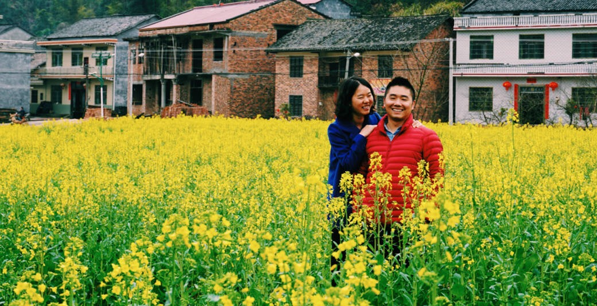

举办地点：攸县酒埠江镇柘桑村祥大余组 举办时间：2017年1月15日，农历腊月十八 恭请各位参加婚礼
举办地点：攸县酒埠江镇柘桑村祥大余组 举办时间：2017年1月15日，农历腊月十八 恭请各位参加婚礼
举办地点：茶陵大英村山前组 举办时间：2017年1月18日，农历腊月廿一 恭请各位参加婚礼
One morning, when Gregor Samsa woke from troubled dreams, he found himself transformed in his bed into a horrible vermin. He lay on his armour-like back, and if he lifted his head a little he could see his brown belly, slightly domed and divided by arches into stiff sections. The bedding was hardly able to cover it and seemed ready to slide off any moment.Kafka
Filmed on May 5, 2010, a mostly first-person chronicle of the day’s events leading up to a performance in Wollongong, Australia. Shot on Canon 5D mkII with 50mm 1.2 and 24-70 lenses.